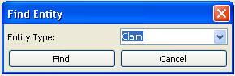
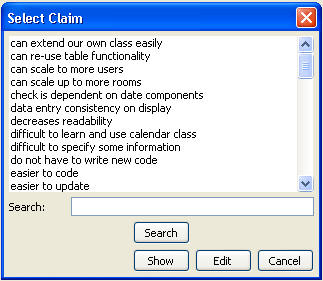

This then brings up a list of items of that type, as shown in the following figure. The user can search for all or part of the item name to find it in the list. After find it, the user then can bring up the item in an editor by using the “Edit” button. The user can also choose to expand it in the hierarchy shown in the Rationale Explorer by using the “Show” button. This is helpful if the user wants to know the context around the entity.
